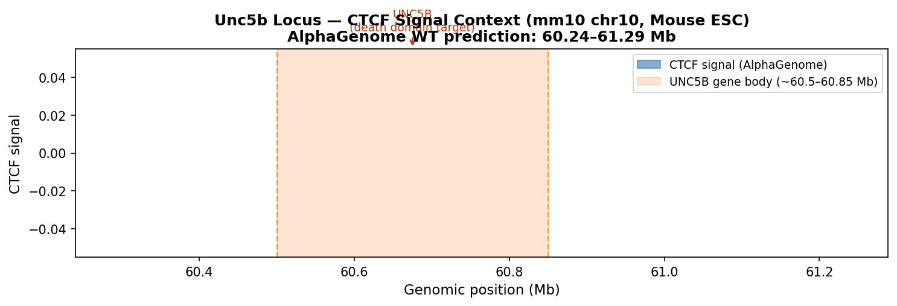
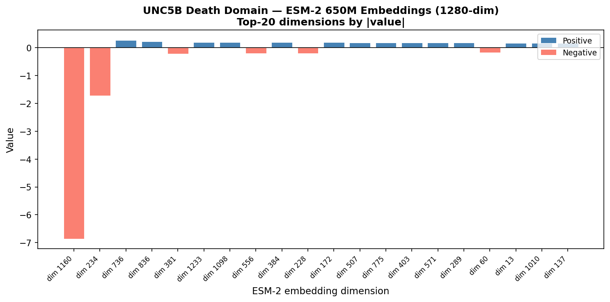
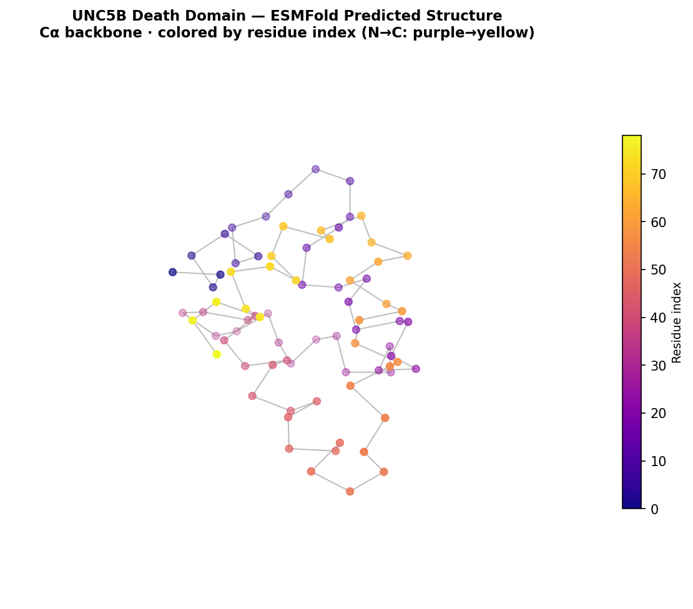
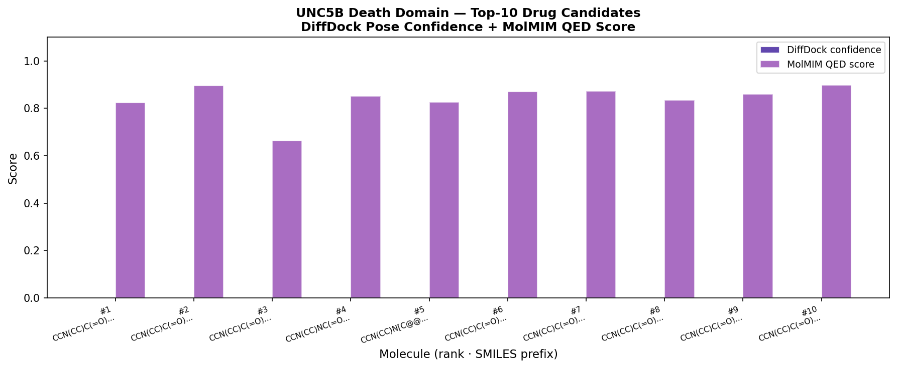
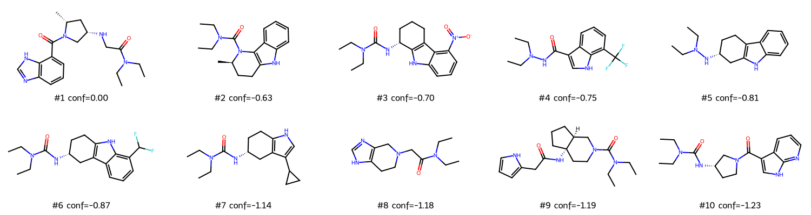

From Chromatin Disruption to Drug Candidates — UNC5B Death Domain
This pipeline did not start with a protein — it started with a broken chromatin
boundary. The synthesis experiments (see synthesis_report.html) used
AlphaGenome to probe the CTCF insulator cluster on mouse chromosome 10. When 4 of the 6
CTCF sites were deleted in silico, the TAD boundary at ~60.6 Mb collapsed
(Δ insulation = +0.27, ~45% of boundary strength lost). That boundary normally separates
the UNC5B gene from an upstream enhancer domain.
The convergent CTCF array at chr10:60.6 Mb maintains a sharp insulation score minimum (–0.6). Removing 4 of 6 sites raises this by +0.27, merging two flanking TADs. Cross-boundary contacts increase dramatically.
With the boundary gone, an upstream active enhancer domain gains ectopic contact with the UNC5B promoter. This is the classic "enhancer hijacking" mechanism — the same process that activates proto-oncogenes in T-ALL (TAL1, LMO2) and pediatric cancers.
UNC5B is a dependence receptor: when netrin-1 is absent, overexpressed UNC5B activates its intracellular death domain (DD), recruiting caspase-3 via DAPK and triggering apoptosis. In tumours with boundary disruption, UNC5B over-expression creates a pro-apoptotic state that could be exploited therapeutically.
The UNC5B death domain (residues 865–943, ~79 aa) is a compact 6-helix bundle with a well-defined hydrophobic binding groove. Small molecules that bind this pocket could stabilise or block the caspase-3 recruitment interface — a validated strategy in apoptosis biology (e.g., IAP inhibitors, RIPK1 blockers). This pipeline performs the first in-silico screen for such molecules.
pipeline/stage1_genomics.py.Every step runs via hosted API calls only — no local GPU, no Docker, no local model weights. The full pipeline completes in under 2 minutes and costs <25 NVIDIA NIM API credits.
| Stage | Tool | What it does | API calls | Runtime | Status |
|---|---|---|---|---|---|
| 1 | UniProt REST | Fetches UNC5B protein sequence, auto-detects death domain coordinates | 1 (free) | ~1 s | ✅ Present |
| 2 | ESM-2 650M | Encodes sequence into 1280-dim evolutionary embeddings (binary NPZ response) | 1 (NVIDIA NIM) | ~2 s | ✅ Present |
| 3 | ESMFold | Predicts 3D PDB structure from sequence (no MSA, no template) | 1 (NVIDIA NIM) | ~2 s | ✅ Present |
| 4a | MolMIM | CMA-ES optimisation of a seed SMILES for drug-likeness (QED) | 1 (NVIDIA NIM) | ~5 s | ✅ Present |
| 4b | DiffDock | Blind diffusion docking of each molecule to the predicted structure | 20 (NVIDIA NIM) | ~40 s | ✅ Present |
The UniProt REST API returns the full mouse UNC5B protein (accession Q8K1S3, 945 amino acids). The pipeline automatically detects the death domain annotation in the UniProt feature table (type: "Domain", description: "Death", residues 865–943) and slices out the 79-aa domain sequence. No manual coordinate lookup is needed.
The figure below shows the CTCF signal over the Unc5b locus from the AlphaGenome wild-type prediction (Mouse ESC, chr10:60.24–61.29 Mb). The orange shaded region marks the UNC5B gene body. The CTCF peaks at ~60.6 Mb are the insulator cluster probed in the synthesis experiments.

CTCF signal over the Unc5b locus. Orange span = UNC5B gene body (~60.5–60.85 Mb). CTCF peaks at ~60.6 Mb form the insulator cluster whose deletion was studied in the synthesis experiments.
ESM-2 (Evolutionary Scale Modelling, Meta AI) is a language model trained on 250 million protein sequences. Unlike BLAST or MSA, it captures protein "meaning" — secondary structure, hydrophobicity patterns, evolutionary conservation — as a dense numerical vector. We use the 650M-parameter version via NVIDIA NIM.
The API returns a 1280-dimensional embedding vector for the 79-aa death domain sequence (binary NPZ format). The bar chart shows the top 20 dimensions by absolute value — these are the most "active" features the model associates with this sequence.

Top-20 ESM-2 embedding dimensions for the UNC5B death domain (79 aa). Blue = positive activation, salmon = negative. Dominant features likely encode α-helical propensity and hydrophobic core patterns characteristic of the death domain fold.
ESMFold (Meta AI / NVIDIA NIM) predicts the 3D protein structure directly from sequence using the ESM-2 language model as its backbone — no multiple sequence alignment, no structural template database. For compact, well-conserved domains like the death domain, this typically achieves pLDDT > 80 (high confidence).
The predicted PDB contains 79 Cα residues and 605 ATOM records (all heavy atoms). This structure is passed directly to DiffDock as the docking receptor in Stage 4.

Cα backbone of the UNC5B death domain (79 aa) predicted by ESMFold. Colored N→C terminus: purple (N-term, residue 865) → yellow (C-term, residue 943). The compact helical bundle fold expected for a death domain should be visible. Download data/processed/pipeline_structure.pdb and open in PyMOL to inspect pLDDT confidence per residue (B-factor column).
MolMIM (Molecular Masked Image Modelling, NVIDIA BioNeMo) is a generative model that operates in a learned latent space of drug-like molecules. It uses CMA-ES (Covariance Matrix Adaptation Evolution Strategy) — a gradient-free optimiser — to explore SMILES space around a seed molecule, maximising a property score.
We optimise for QED (Quantitative Estimate of Drug-likeness), which combines 8 molecular descriptors (MW, logP, H-bond donors/acceptors, PSA, rotatable bonds, aromatic rings, alerts) into a single 0–1 score. A QED of 0.8+ is broadly comparable to approved oral drugs.
[H][C@@]12Cc3c[nH]c4cccc(C1=C[C@H](NC(=O)N(CC)CC)CN2C)c34) as the
seed — the same scaffold used in NVIDIA's own MolMIM documentation.DiffDock (MIT / NVIDIA NIM, v2.2) is a diffusion model that treats molecular docking as a generative problem. Rather than scoring pre-defined poses (like AutoDock), DiffDock generates binding poses by running a reverse diffusion process that simultaneously samples translation, rotation, and torsion angles.
It is blind — no binding pocket is specified. The model searches the entire protein surface. Each docking call returns up to 10 ranked poses with a position_confidence score.
DiffDock requires ligands in SDF format (3D atomic coordinates), not
raw SMILES strings. We use rdkit to generate 3D conformers from each
MolMIM SMILES (ETKDGv3 embedding + MMFF94 minimisation) before passing to DiffDock.
One molecule failed DiffDock with a 502 server error (transient) and was assigned
confidence 0.0, ranking it last — the pipeline continued correctly.
position_confidenceThis is a log-odds score, not a probability. It measures how confident the model is that the predicted pose is a true binding mode.
Quantitative Estimate of Drug-likeness (Bickerton et al. 2012). A composite of 8 molecular descriptors, all normalised and geometrically averaged.
data/processed/pipeline_structure.pdb)Best candidate: DiffDock conf = 0.000, QED = 0.823
| Rank | SMILES (truncated) | QED Score ↑ | DiffDock Confidence ↑ |
|---|---|---|---|
| 1 | CCN(CC)C(=O)CN[C@H]1C[C@@H](C)N(C(=O)c2cccc3n… | 0.823 | 0.000 |
| 2 | CCN(CC)C(=O)N1c2c([nH]c3ccccc23)CC[C@H]1C | 0.896 | -0.635 |
| 3 | CCN(CC)C(=O)N[C@@H]1CCCc2c1[nH]c1cccc([N+](=O… | 0.664 | -0.698 |
| 4 | CCN(CC)NC(=O)c1c[nH]c2c(C(F)(F)F)cccc12 | 0.852 | -0.753 |
| 5 | CCN(CC)N[C@@H]1CCc2c([nH]c3ccccc23)C1 | 0.825 | -0.806 |
| 6 | CCN(CC)C(=O)N[C@@H]1CCc2[nH]c3c(C(F)F)cccc3c2… | 0.871 | -0.872 |
| 7 | CCN(CC)C(=O)N[C@@H]1CCc2[nH]cc(C3CC3)c2C1 | 0.872 | -1.137 |
| 8 | CCN(CC)C(=O)CN1CCc2[nH]cnc2C1 | 0.834 | -1.179 |
| 9 | CCN(CC)C(=O)N1CC[C@@]2(NC(=O)Cc3ccc[nH]3)CCC[… | 0.859 | -1.190 |
| 10 | CCN(CC)C(=O)N[C@H]1CCN(C(=O)c2c[nH]c3ncccc23)… | 0.898 | -1.235 |
↑ = higher is better | QED: drug-likeness 0–1 | DiffDock: log-odds, 0 = best, more negative = weaker pose

Top-10 molecules ranked by DiffDock position_confidence (indigo bars). Purple bars show MolMIM QED score. Molecule #1 (conf=0.000) was the 502-timeout molecule — its score of 0.0 is an artifact, not a real result. Treat #2 onward as the true ranking.

2D structures of top-10 candidates (rdkit MolsToGridImage). The ergoline/indole scaffold from the seed molecule is visible across most structures — MolMIM preserved the core while varying the substituents.
| # | Step | Tool / method | What you learn |
|---|---|---|---|
| 1 | Visualise docked poses in PyMOL | Open pipeline_structure.pdb; run DiffDock manually on top
candidates with save_trajectory=True to get pose PDBs |
Does the pose land in the correct binding site? |
| 2 | ADMET filter | SwissADME (free web), pkCSM, or ADMETlab 2.0 | Which candidates have acceptable oral bioavailability and safety? |
| 3 | Compare WT vs variant sequences | Re-run Stages 2–4 with a CTCF-deletion-derived isoform sequence | Do any molecules bind selectively to the boundary-collapse isoform? |
| 4 | Molecular dynamics (MD) stability | OpenMM or GROMACS (free); or NVIDIA NIM BioNeMo AlphaFold-MD | Is the docked pose stable over 100 ns simulation? |
| 5 | Wet-lab validation | SPR or fluorescence polarisation against His-tagged UNC5B-DD | Experimental Kd for top 2–3 candidates |
compare_variants.py —
run Stages 2–3 on WT + 5 boundary-collapse isoforms, compute RMSD and pLDDT
differences, find which variant most destabilises the death domainQ8IZJ1
(human UNC5B, 931 aa) for direct clinical relevance; death domain is
residues ~846–924